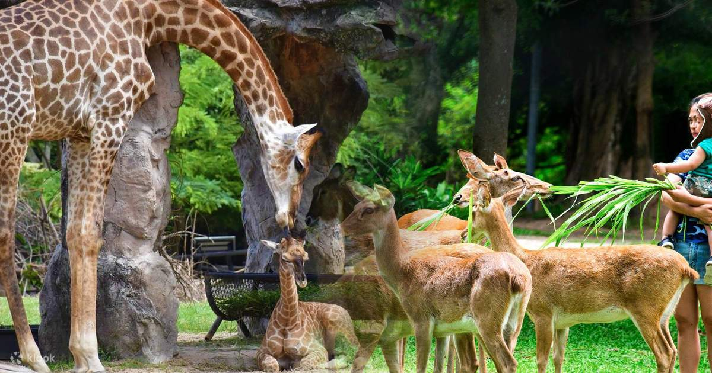

ภาพรวมจังหวัด
ข้อมูลทั่วไปเกี่ยวกับจังหวัดและจุดเด่นสำคัญ
สถานที่น่าสนใจ
-
หาดบางแสน

หาดบางแสน ในทะเลของอ่าวไทยแห่งหนึ่ง ตั้งอยู่ในพื้นที่ตำบลแสนสุข อำเภอเมืองชลบุรี จังหวัดชลบุรี เป็นสถานที่ท่องเที่ยวยอดนิยมของชาวไทยมาช้านาน มีถนนตัดเลียบหาดเคียงคู่ไปกับทิวมะพร้าว ถัดเข้าไปมีร้านอาหาร ร้านขายของที่ระลึก และที่พักเรียงรายอยู่จำนวนมาก นักท่องเที่ยวนิยมไปนั่งพักผ่อนชมทิวทัศน์ทะเลกันบนเก้าอี้ผ้าใบบนชายหาด พร้อมมีบริการห่วงยางให้เช่าว่ายน้ำ มีเรือบานาน่าโบ๊ต จักรยานให้เช่า และห้องอาบน้ำจืด ทุกวันหยุดหาดบางแสนจะคึกคักไปด้วยนักท่องเที่ยว เนื่องจากเป็นชายหาดขนาดใหญ่ที่ใกล้กรุงเทพฯมากที่สุด จึงสามารถเดินทางแบบไปเช้า-เย็นกลับได้ บางแสนเริ่มเป็นแหล่งท่องเที่ยวยอดนิยมมาตั้งแต่ปี พ.ศ. 2486 จนถูกขนานนามว่า “บางแสนดินแดนสุขี” มีผู้เดินทางมาเยือนเป็นจำนวนมาก จนครั้งหนึ่งบางแสนเคยทรุดโทรม ผิดกับปัจจุบันที่ได้รับการดูแลจัดระเบียบอย่างดี จึงกลายเป็นชายหาดที่สะอาด น่าเที่ยวในทุกฤดูกาล
-
เกาะแสมสาร

เกาะแสมสาร เป็นหนึ่งใน 9 เกาะของหมู่เกาะแสมสาร ตั้งอยู่ในเขตตำบลแสมสาร อำเภอสัตหีบ จังหวัดชลบุรี อยู่ในการดูแลของกองทัพเรือ เปิดให้นักท่องเที่ยวไปเที่ยวชมได้แบบไปเช้าเย็นกลับ ไม่สามารถพักค้างคืนได้ โดยนักท่องเที่ยวนิยมเดินทางมาท่องเที่ยวในช่วงเดือนมกราคมถึงเมษายน
-
สวนสัตว์เปิดเขาเขียว
สวนสัตว์เปิดเขาเขียว ตั้งอยู่ที่ ตำบลบางพระ อำเภอศรีราชา จังหวัดชลบุรี เป็นสวนสัตว์เปิดขนาดใหญ่ในจังหวัดชลบุรี สวนสัตว์เป็นบริการสาธารณะ ซึ่งรัฐได้ดำเนินการเพื่อให้บริการแก่สังคมและประชาชนด้านต่าง ๆ เป็นสวนสัตว์ที่มีนักท่องเที่ยวชมมากที่สุด
-
เกาะสีชัง

สำหรับคนที่ชอบเที่ยวถ่ายรูปเน้นความเป็นธรรมชาติ เราแนะนำให้ไปที่เที่ยวชลบุรีธรรมชาติอย่างเกาะสีชัง โดยใช้เวลาข้ามเรือไปที่เกาะสีชังประมาณ 45 นาที ที่เกาะแห่งนี้เต็มไปด้วยสถานที่ท่องเที่ยวหลากหลายและได้ถ่ายรูปในแบบที่แตกต่างกัน ทั้งบรรยากาศเป็นธรรมชาติอย่างบริเวณช่องเขาขาด แหลมจักพงษ์ และจุดยอดฮิตที่ไม่ว่าใครมาเที่ยวเกาะสีชังแล้วจะต้องมาเช็กอินถ่ายรูปมุมนี้คือ พิพิธภัณฑ์พระจุฑาธุชราชฐาน ที่เป็นสะพานสีขาวทอดยาวลงทะเลที่เป็นศาลาริมทะเลเก่าแก่ ซึ่งเดิมทีเคยเป็นที่ประทับในช่วงฤดูร้อนของพระบาทสมเด็จพระจุลจอมเกล้าเจ้าอยู่หัว (รัชกาลที่๕)
-
สวนนงนุช

สวนนงนุช เป็นสถานที่ท่องเที่ยวที่เป็นสวนแบบมิกซ์หลายๆ สวนตามแต่ละประเภท จัดแต่งสวยงาม บนพื้นที่ขนาดกว้างขวางถึง 1,700 ไร่ ที่มีจุดเริ่มต้นตั้งแต่ปีพุทธศักราช 2523 จวบจนถึงปีนี้ ผ่านการได้รับรางวัลมามากมาย จนกลายเป็นสวนสวยระดับโลก